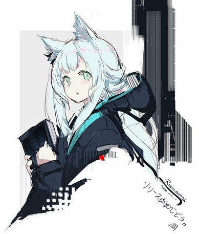
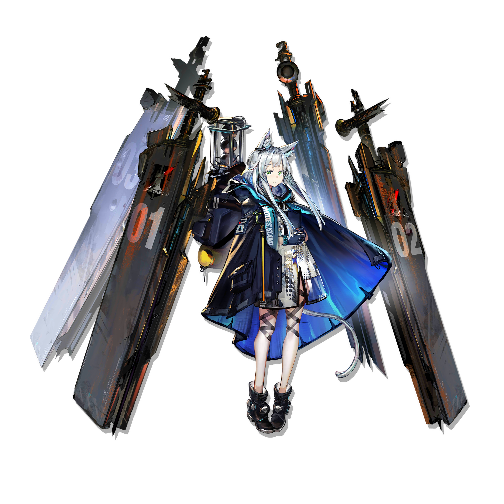

Code name:Rosmontis
Gender:Female
race:cat
Height:142cm
occupation:snipe
artist:唯@W
voice actor:Ogura Yui
Objective resume:elite Operater,she performs well in tasks such as fighting large creatures,
destroying hard targets, emergency braking of facilities, and interrupting skirmishes.
No permissions for the rest of the archives

Arknights
It is a strategy to real-time strategy tower defense game independently developed and operated by hypergryph Network, which was publicly tested on May 1, 2019. The age-appropriate level of the game is 12+. In the game, the player will act as Rhode Island's leader, "Dr.", leading Rhode Island's cadres to rescue the victims, deal with ore disputes, and fight other forces such as the Integration Movement.